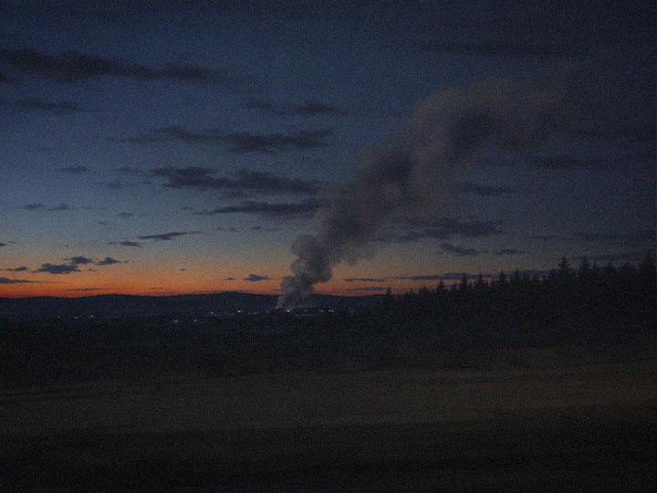

Residents of the small farming communities along the Ireyn river reported hearing explosions and what several described as sustained gunfire in the early hours of Wednesday morning, in an incident county authorities are attributing to an accident at a chemical storage facility.
"It wasn't fireworks and it wasn't a gas line, I've heard both my whole life," said one resident who asked not to be named, citing the presence of unmarked military vehicles on the access road for most of Wednesday. "There were trucks with soldiers in them I've never seen before. Not our border patrol. Different uniforms."
A spokesperson for the Ministry of the Interior confirmed "a fire at a private storage facility" near the Route 9 bridge but declined to name the operator of the facility, describe its contents, or say why the incident required a military response. "There is no threat to public safety," the spokesperson said. "We ask residents to avoid the area while cleanup continues."
The Courier obtained internal intake notes from Ireyn Valley Regional Hospital showing at least eleven admissions overnight Tuesday into Wednesday, a volume far exceeding the hospital's average for a full week. A nurse who spoke on condition of anonymity, fearing for her job, said staff were told not to discuss the cases and that two patients were transferred by unfamiliar personnel before morning rounds. "We had six patients in one night with injuries I don't have a clean explanation for," she said. "Two of them were gone before we could even get a name."
No storage facility of the kind described by the Ministry appears in county zoning or business records reviewed by the Courier. A property matching the general location is listed under an agricultural holding company that has filed no activity reports since 2009.
The Courier has requested comment from the Ministry of the Interior, the Ministry of Defense, and the county prosecutor's office regarding the discrepancies between the official account and hospital and eyewitness records. As of publication, none had responded.
This is a developing story and will be updated as further information becomes available.